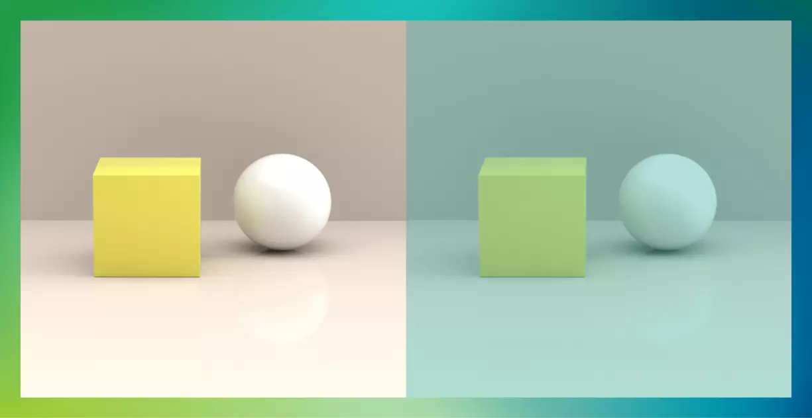
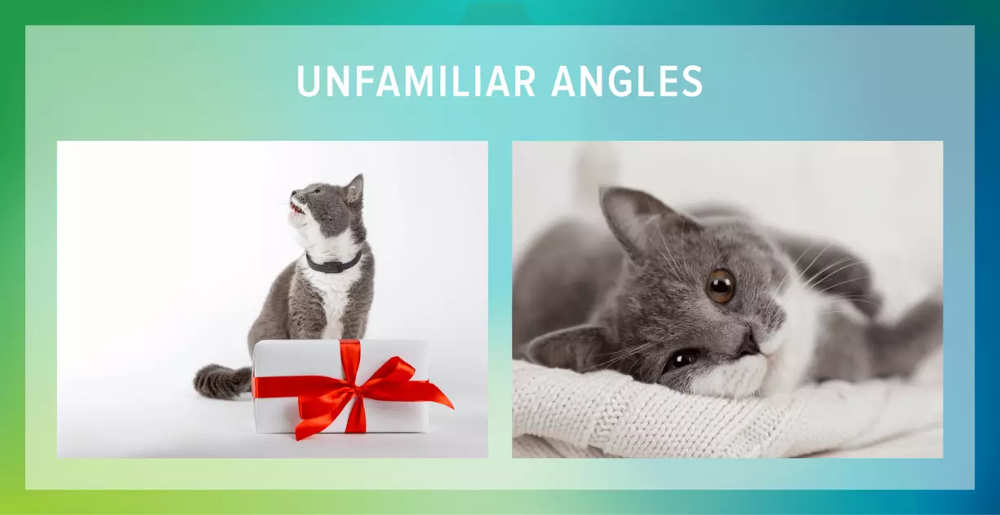

I am Abolfazl Foroughi, a student of network and software
Face recognition and computer vision
I am Abolfazl Foroughi, a student of network and software
Face recognition and computer vision
بینایی کامپیوتر یا Computer Vision شاخهای از علم هوش مصنوعی و یادگیری ماشین است که در آن سعی میشود تا مدلهایی را ایجاد کرد که میتوانند اطلاعات بصری را درک و دریافت کنند. منظور از این اطلاعات بصری هر چیزیست که در دنیای واقعی و یا تصاویر و ویدیوها موجود باشد.
در دهه 1990، برخی از موضوعات تحقیقاتی قبلی فعال تر از بقیه شدند. تحقیقات در بازسازی های سه بعدی تصویری منجر به درک بهتر کالیبراسیون دوربین شد. با ظهور روشهای بهینهسازی برای کالیبراسیون دوربین، متوجه شدیم که بسیاری از ایدهها قبلاً در نظریه تنظیم بستهای از حوزه فتوگرامتری بررسی شدهاند . این منجر به روشهایی برای بازسازی سهبعدی پراکنده صحنهها از چندین تصویر شد. پیشرفت در مشکل مکاتبات استریو متراکم و تکنیکهای استریو چند نمای بیشتر انجام شد. در همان زمان، از تغییرات برش نمودار برای حل تقسیمبندی تصویر استفاده شد. این دهه همچنین اولین بار بود که تکنیک های یادگیری آماری در عمل برای تشخیص چهره ها در تصاویر استفاده شد (به Eigenface مراجعه کنید.). در اواخر دهه 1990، با افزایش تعامل بین رشته های گرافیک کامپیوتری و بینایی کامپیوتر، تغییر قابل توجهی ایجاد شد. این شامل رندر مبتنی بر تصویر ، شکلگیری تصویر ، درونیابی نمای، دوخت تصویر پانوراما و رندر اولیه میدان نور بود . کار اخیر شاهد تجدید حیات روشهای مبتنی بر ویژگی بوده است که در ارتباط با تکنیکهای یادگیری ماشین و چارچوبهای بهینهسازی پیچیده استفاده میشوند.
به صورت خودکار بتواند اشیائی که در تصویر وجود دارند را شناسایی کرده و بگوید که در چه جایی قرار دارند. اشیاء دریافتی را دستهبندی کرده و روابط میان آنها را پیدا کند. محتوای کلی هر کدام از تصاویر را استخراج کند.
برای آنکه قابلیت تشخیص اشیاء را به کامپیوترها بدهیم باید با صدها و هزاران نمونه تصویر آموزش داده شوند. این کار باعث میشود تا در صورت مواجه با یک تصویر جدید آن را با هزاران نمونه پیش از خود مقایسه کرده و با نزدیکترین نوع خود ارتباط برقرار کند.
انسانها شباهتهای فیزیکی بسیار زیادی دارند اما اگر به دقت توجه کنیم متوجه خواهیم شد که رنگ موی سر، فاصله چشمها با یکدیگر، نحوه کشیده شدن ابروها و... هر انسانی میتواند کمی با دیگر انسانها تفاوت داشته باشد. از این رو در ایجاد سیستمهای تشخیص چهره این موضوع ارزیابی خواهد شد.
برای بینایی کامپیوتر بسیار مهم است که از هر چیزی که قصد آموزش آن به هوش مصنوعی را دارید در نورهای مختلفی از آن تصویربرداری کنید.
بسیار مهم است که برای هر شئ از چند زاویه تصاویری را به هوش مصنوعی یاد بدهید. در این حالت هوش مصنوعی میتواند در بازه گستردهتری تصاویر را تشخیص دهد.
اشیائی که به یک دستهبندی تعلق دارند اما از ظاهر متفاوتی برخوردار هستند نیز یکی دیگر از چالشهای اصلی برای بینایی کامپیوتر است.
دستهبندی کردن تصاویر و تشخیص الگوها مواردی هستند که مستقیما میتوانند به کمک یک پزشک بیایند.
ازار ماشینهای خودکار امروزه بسیار گرم شده و تمام این تکنولوژی وابسته به علم بینایی کامپیوتری است.
سیستمهای امنیتی برای کنترل ورود و خروج می تواند به خوبی از سیستمهای تشخیص بینایی استفاده کند